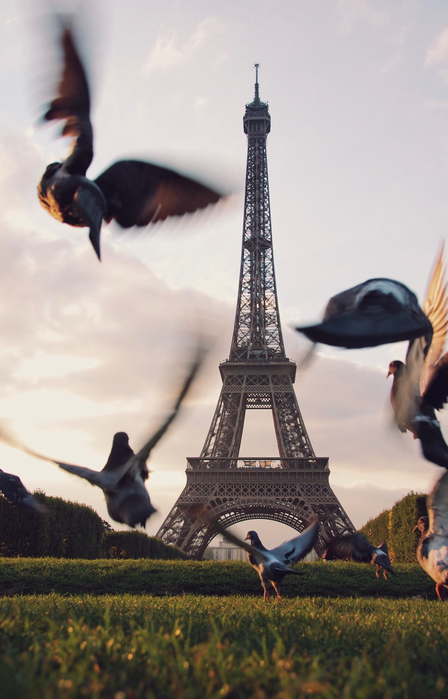

|  |
Thomas Jefferson once said “a walk about Paris will provide lessons in history, beauty, and in the point of life.”
There’s a reason Paris is one of the most popular cities among travelers. Known as the “City of Light” or the “City of Love,” the streets of Paris
overflow with culture, art, beauty, and history. Whether searching out Monet’s Water Lilies at Musée de l’Orangerie, climbing the many steps of
Sacré-Cœur, standing before the Eiffel Tower in awe, or searching out the best crepes along the Seine, Paris is a city that captures the hearts of
millions ever year.
|